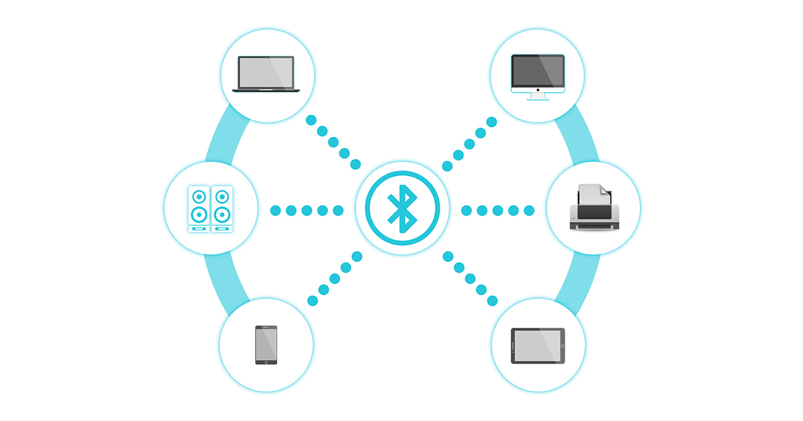
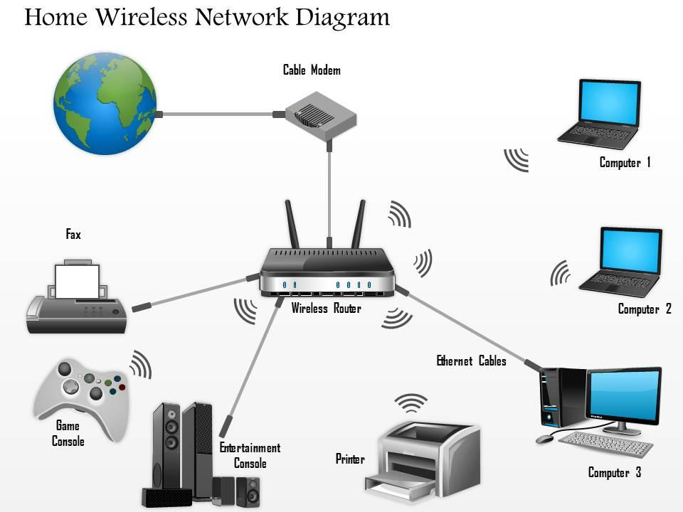
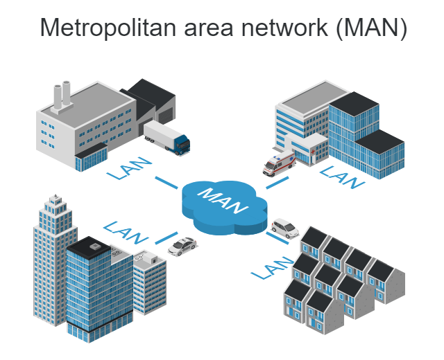

Personal Area Network. Conecta dispositivos personales a corta distancia.
Ejemplo: teléfono conectado a audífonos Bluetooth.

Local Area Network. Conecta dispositivos dentro de una casa, oficina o edificio.
Ejemplo: red WiFi doméstica.

Metropolitan Area Network. Conecta varias redes dentro de una ciudad.
Ejemplo: red municipal.
Wide Area Network. Conecta redes ubicadas en grandes distancias.
Ejemplo: Internet.
| Tipo | Alcance | Velocidad | Ejemplo |
|---|---|---|---|
| PAN | Pocos metros | Alta | Bluetooth |
| LAN | Edificio | Muy alta | WiFi Hogar |
| MAN | Ciudad | Alta | Red Universitaria |
| WAN | Países y continentes | Variable | Internet |